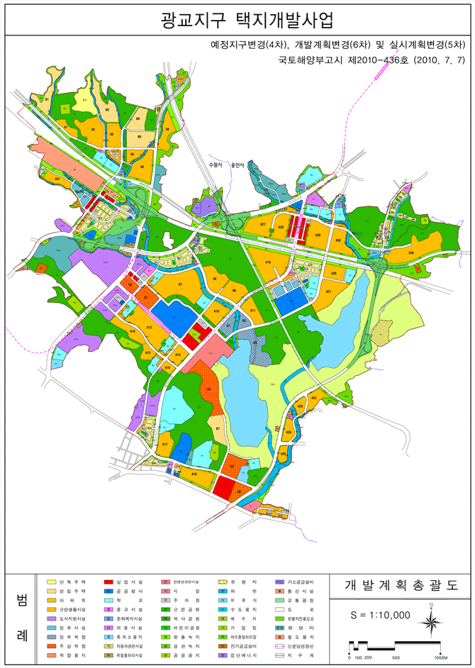
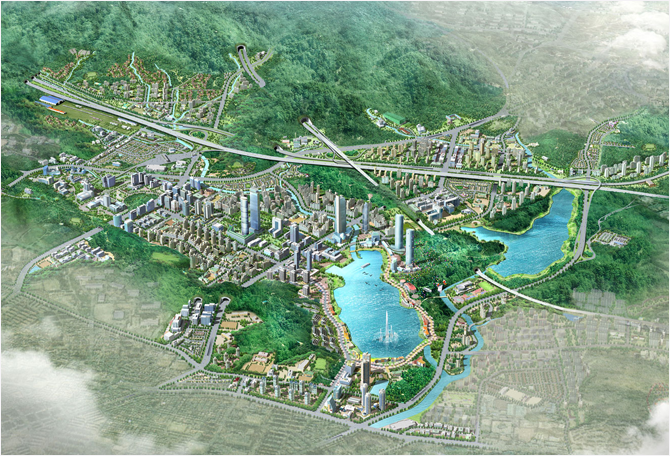

한번쯤 마음에 두었던 도시, 자연이 완성해가는 산소 도시
수원시 유시티입니다.
수원시 유시티입니다.
2016.08.09 15:00
29
비
- 통합대기환경지수
- 보통
- 오존
- 보통
- 미세먼지
- 보통
- 초미세먼지
- 보통
- 부패지수
- 좋음
- 아황산가스
- 좋음
- 이산화질소
- 좋음
- 일산화탄소
- 좋음
광교U-City 호매실U-City
기본계획
- 기본방향
- 부족한 가용토지의 효율적 활용 도모
- 입체적 토지활용 및 복합용도개발의 적극 도입
- 자연환경의 보전ㆍ복원 및 도시개발 테마로의 활용
- 자연지형을 활용한 친환경적 계획 수립
- 주ㆍ상ㆍ산업ㆍ행정 등의 기능이 복합적으로 어우러진 자족도시 계획
- 도시경관과 단지의 Identity를 살린 주제가 있는 단지계획
- 주택용지
- 환경친화적이고 쾌적한 도시환경 조성을 위한 낮은 주택용지율(19.0%) 계획
- 단독주택의 공급 축소로 단독 : 공동 = 10.0% : 90.0% 배분
- 영동고속도로 북서측지구 및 지구내 양호한 산림지역은 자연환경을 활용한 환경친화적 주택단지 조성의 유도와 다양한 주거환경
- 창출을 위한 경사지를 활용한 연립주택 배치
- 공동주택은 중앙부에 상업ㆍ업무지구와의 연계를 감안한 아파트 용지를 주로 배분하고 기존의 용인지역에는 신분당연장선 역사와 연계하여 공동주택지 배분
- 유원지 북동측 상현동에 저밀도의 단독주택지 배치
- 상업ㆍ업무시설
- 광교의 도심은 주변지역과의 연관성, 지역 중심성, 행정타운의 상징성 등을 고려하여 지역중심의 상권으로 조성
- 인구가 상대적으로 많이 배분되는 동쪽지역에 있는 신분당연장선 역사의 최적위치를 감안하여 배치, 지역중 심기능 담당
- 유원지와 연계한 상업용지를 유원지 입구에 배치하여 수원시 동측지역의 관문역할 수행
- 주상복합단지 및 업무복합단지는 도심에 중심상업지역, 역사와 연계하여 배치함으로써 중심상업과 주거와의 기능 상충을 최소화하고, 도시의 중심성을 강화하여 활력 있는 도심을 창출토록 계획
- 도시지원시설용지(광교테크노밸리)
- 도시지원시설용지는 단지내 중소기업종합지원센터, 나노펩소자특화센터 등과 연계가 용이한 동수원IC와 밀레니엄로변에 집중
- 배치를 통해, 광교테크노밸리를 조성하여 집적에 의한 시너지효과 창출을 도모
- 상업ㆍ업무시설, 주거 등과의 연계 등을 고려하여 계획
- 입지수요에 탄력적으로 대응하기 위해 일부 토지를 유보지로 계획하여 추후 여건변화에 능동적인 대응이 가능토록 계획
- 공원ㆍ녹지 용지
- 광역녹지축상의 녹지대를 공원으로 계획하며 하천을 따라 부녹지축 계획
- 지구내 지방하천 및 소하천을 활용한 수변녹지공간 조성하여 하천경관 향상 및 지역주민 휴식공간 제공
- 하천이 합류되는 원천저수지 상부 주변 녹지대를 포함하는 근린공원을 계획
- 각 생활권별로 근린공원 및 어린이공원을 적정 배치하며 보행자전용도로와의 연계도모
- 고속도로 및 주요간선 도로변에 완충녹지대를 설치하여 소음 및 대기오염을 최소화
- 공공시설 용지
- 가급적 주로 공원, 녹지나 보행자도로변에 보행동선 등을 고려하여 배치
- 문화ㆍ행정ㆍ복지 등의 시설은 이용권을 고려하여 근린공원 및 지구 중심주변에 배치
- 토지이용계획도 
- 조감도 
- 토지이용계획도
-
구분 면적(㎡) 구성비(%) 비고 합계 11,304,937 100.0 주택건설용지 2,096,825 18.5 단독주택 260,360 2.3 공동주택 1,735,709 15.3 연립 245,463 2.2 아파트 1,490,246 13.1 근린생활시설 100,756 0.9 도시지원시설용지 387,119 3.4 도시지원시설 387,119 3.4 상업,업무시설용지 532,087 4.7 업무시설 48,741 0.4 업무복합 118,501 1.0 주상복합 233,253 2.1 상업시설 131,592 1.2 공공시설용지 8,288,906 73.4 공공청사 268,386 2.4 행정타운, 법조타운 학교 413,137 3.6 유3, 초7, 중5, 고3, 특수학교1, 대학교1,교육시설2 종교용지 35,878 0.3 16개소 컨벤션관련시설 99,175 0.9 문화복지시설 10,028 0.1 5개소(7호,12호 근린공원내 2개소 포함) 의료시설 21,389 0.2 1개소 휴게소용지 7,298 0.1 1개소 통신시설 495 0.1 1개소 자동차관련시설 49,177 0.4 6개소 위험물저장 및 처리시설 34,950 0.3 가스충전소 3개소, 주유소 15개소 시장 15,293 0.1 1개소 주차장 65,534 0.6 43개소 공원녹지 4,735,312 41.9 근린공원 1,715,785 15.2 12개소(문화복지시설 2개소, 이의배수지, 실개천 함양지/
유수지 및 생태통로 포함)역사공원 139,619 1.2 2개소(지역역사박물관, 홍보관, 혜령군묘이전 복원부지/
길마재 줄다리기터, 함양지 포함)어린이공원 24,095 0.2 12개소 완충녹지 414,544 3.7 38개소 경관녹기 246,657 2.2 25개소 공공공지 128,415 1.1 35개소 하천 271,361 2.5 지방하천 6개소, 소하천 7개소 유원지 1,794,836 15.9 지역커뮤니티센터 1개소(시민문화회관, 도서관) 저류지 30,048 0.3 2개소 수도용지 76,358 0.7 배수지 5개소(근린공원내 1개소 포함),가압장 2개소,
수도시설 6개소하수종말처리장 21,814 0.2 1개소 전기공급설비 18,856 0.2 변전소 3개소, 케이블헤드 1개소 가스공급설비 9,911 0.1 1개소 집단에너지공급시설 32,845 0.3 2개소 교통광장 284,025 2.5 5개소 철도용지 163,087 1.4 차량기지 및 경기대학교역(가칭) 도로 1,625,878 14.3 보행자도로 15,668 0.1 유보지 281,395 2.3 11개소